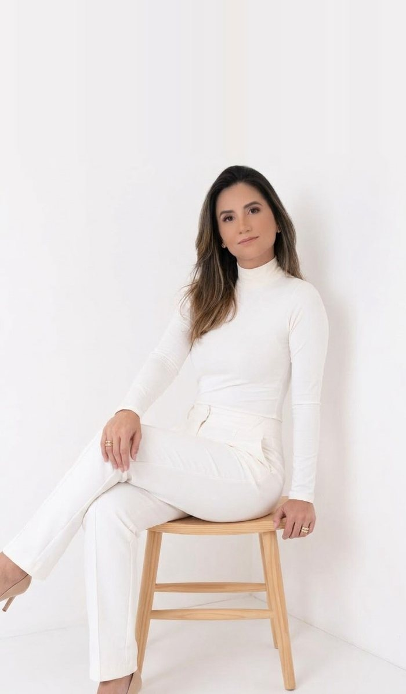
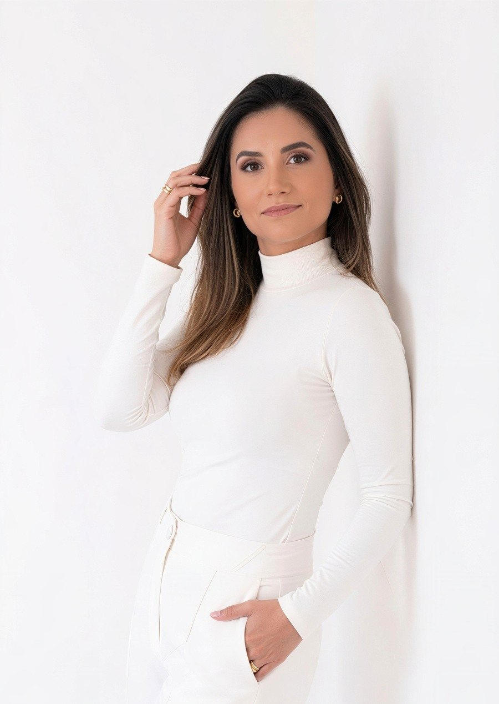
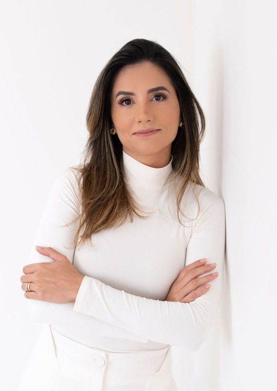
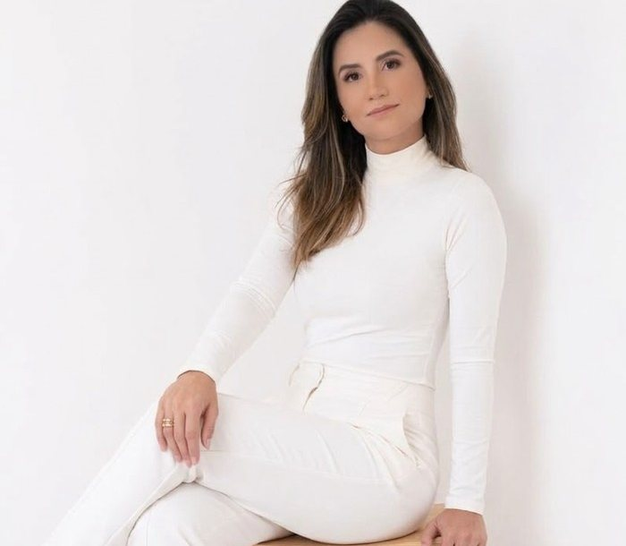
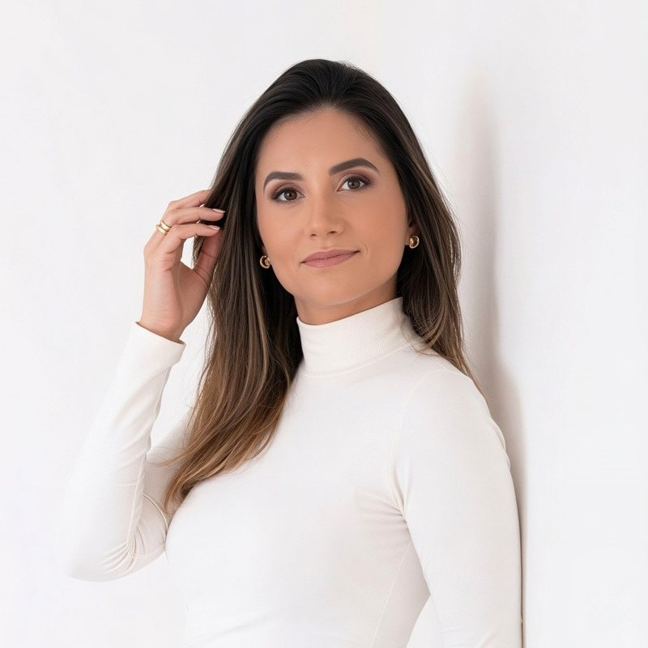

Avaliação detalhada
Entendo suas necessidades únicas e ajusto as recomendações ao seu estilo de vida e aos alimentos de que você mais gosta, buscando a praticidade.

Júlia Monteiro · Nutricionista
Um acompanhamento personalizado com um olhar atento, paciente e cuidadoso: escuto antes de prescrever, para criar um plano que caiba na sua rotina e nos alimentos de que você mais gosta.
Por que escolher
Cuidado nutricional personalizado: o plano se adapta a você, e não o contrário.

“Nem todo plano alimentar precisa ser rígido. A dieta ideal é aquela que você consegue seguir.”
Júlia MonteiroEntendo suas necessidades únicas e ajusto as recomendações ao seu estilo de vida e aos alimentos de que você mais gosta, buscando a praticidade.
Estarei ao seu lado em cada passo, celebrando conquistas e ajustando o que for necessário.
Conhecer você de verdade — sua história, sua rotina e seus desafios — antes de qualquer prescrição.
Não se trata apenas de perder peso, mas de ganhar saúde, energia e bem-estar.
Graduada em Nutrição em 2017, com especialização em Saúde da Mulher (2022–2023).
Comecei no atendimento ambulatorial e hoje me dedico 100% aos atendimentos clínicos.
Atendimentos
Acompanhamento nutricional para mulheres que querem cuidar da saúde sem complicação — com estratégias simples e eficazes para cada objetivo.
A chave para mais qualidade de vida: escolhas possíveis, sem eliminar grupos de alimentos sem motivo.
Quero esse cuidadoPara quem sente que segue uma alimentação legal e, mesmo assim, não consegue engravidar.
Quero esse cuidadoO que você come conversa com o seu bem-estar. Vamos entender essa relação e ajustar a rotina a seu favor.
Quero esse cuidadoEstratégias simples para transformar a rotina em hábitos que se sustentam no dia a dia.
Quero esse cuidadoNão é só sobre perder peso: é sobre ganhar saúde, energia e disposição para a vida real.
Quero esse cuidadoMe conta a sua história. Juntas, vamos descobrir o que funciona e encaixa melhor para você!
Contar minha históriaVamos conversar?
Porque a sua individualidade não foi considerada.
| Coisas que eu acredito | Coisas que eu não acredito |
|---|---|
| Que alimentação saudável pode e deve ser um processo leve e prazeroso. | Terrorismo alimentar. |
| Entender sua rotina e desafios é indispensável para criar uma estratégia de alimentação simplificada e eficaz. | Qualquer dieta que não leve em conta as individualidades de cada pessoa. |
| A “dieta ideal” é aquela que você consegue seguir. | Soluções milagrosas. |
| Reeducação alimentar é a chave para melhor qualidade de vida. | Eliminar grupos inteiros de alimentos sem razão alguma, ou por confiar em falas aleatórias e promessas absurdas. |
| Em escutar antes de prescrever e conhecer você de verdade. | Que precisamos somente de suplementos para alcançar nossos objetivos. |

Prazer!
Nutricionista especialista em Saúde da Mulher
Sabe, a nutrição não precisa ser complicada! Nem todo plano alimentar precisa ser rígido — e nem todo profissional da saúde precisa ser frio.
Eu acredito em um olhar atento, paciente e cuidadoso. Em escutar antes de prescrever, conhecer você de verdade. Em simplificar o que parece difícil. Aqui, a nutrição é leve, possível e feita para a vida real.
Garanto que, dentro de você, existe uma história linda e desafiadora — aquele desejo gigante de mudar e conquistar novos hábitos, sonhos e metas.

Passo a passo
Você me chama. Pelo WhatsApp ou pelo Instagram, me conte um pouco da sua história e do que você busca.
Consulta e avaliação detalhada. Escuto antes de prescrever: sua rotina, seus desafios, suas preferências e seus objetivos.
Plano alimentar personalizado. Simples, possível e ajustado ao seu estilo de vida, com os alimentos de que você mais gosta.
Retornos e suporte contínuo. Celebramos as conquistas e ajustamos o que for necessário, no seu ritmo.
Agende sua consulta
Me conte sua história e o seu maior desejo voltado para a alimentação e a nutrição, que irei te auxiliar da melhor forma possível, trazendo simplicidade e força.
Onde atendo
As opções de atendimento serão confirmadas em breve. Me chame para saber mais.
Dúvidas
Não. Nem todo plano alimentar precisa ser rígido! A “dieta ideal” é aquela que você consegue seguir — por isso o plano é montado a partir da sua rotina, dos seus desafios e dos alimentos de que você mais gosta.
Não sem uma razão. Eliminar grupos inteiros de alimentos sem motivo, por falas aleatórias ou promessas absurdas, não faz parte do meu trabalho.
Suplemento não é atalho nem solução milagrosa. A base do acompanhamento é a sua alimentação do dia a dia; qualquer outra indicação é avaliada individualmente.
Porque o retorno nutricional é parte do processo. É nele que acompanhamos a sua evolução, celebramos as conquistas e ajustamos o que for necessário.
Me chama no WhatsApp ou no Instagram que eu te explico as opções de atendimento disponíveis.
É só responder às três perguntinhas em “Agende sua consulta” e enviar a mensagem — ou tocar em “Agendar consulta” em qualquer parte do site. Eu te respondo para combinarmos o melhor horário.
Nutrição leve, possível e feita para a vida real — com escuta atenta e um plano que respeita a sua individualidade.
Agendar minha consulta